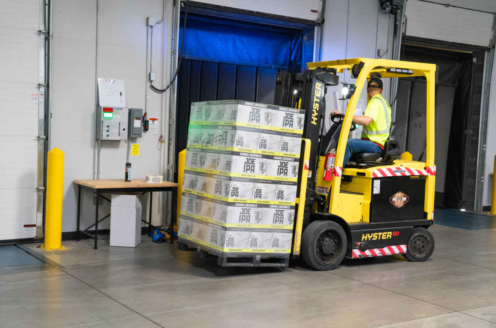

Drone: Ích lợi, Tác hại và Vấn đề
Công nghệ drone hay máy bay không người lái đã cho ta thấy sự tăng trưởng vượt bậc trong thập kỷ qua. Năm 2013, việc Amazon drone để thực hiện việc giao hàng như là một ý tưởng được lấy ra từ một cuốn tiểu thuyết khoa học viễn tưởng.
Bây giờ, chúng ta đang sống trong một thế giới nơi chính phủ có thể sử dụng drone để chống lại sự lây lan của COVID19. Càng ngày chúng ta càng thấy nhiều công ty khởi nghiệp với mục đích sử dụng công nghệ drone để thế giới trở nên tốt đẹp hơn.
Nhưng lịch sử của drone đã không hoàn toàn “trong sạch”. Mặc dù nó có vô số công dụng, nhiều người cho rằng drone được phát minh để sử dụng cho chiến tranh. Bài viết này sẽ khám phá mặt sáng và mặt tối của drone với tiềm năng đáng kinh ngạc này.
Lợi ích: Tiếp cận khu vực không thể tiếp cận được
Trong nhiều năm qua ở Mỹ đã có nhiều bàn luận về ý tưởng sử dụng drone Autel Evo 2 làm phương tiện giao hàng cho các công ty như Amazon và UPS. Tuy nhiên, drone đã tìm thấy một vị trí bất ngờ trong việc cung cấp các vật phẩm y tế ở các quốc gia trên thế giới.
Một vài công ty khởi nghiệp đã có thể hợp tác với chính phủ châu Phi để sử dụng công nghệ drone cung cấp vắc-xin cho các ngôi làng hẻo lánh. Bằng cách gia tăng khả năng tiếp xúc các khu vực đó, các công ty này hỗ trợ cho nhân viên y tế phục vụ người làm và bệnh nhân của họ một cách hiệu quả nhất có thể. Họ còn sử dụng drone để hợp tác với các phòng thí nghiệm và các công ty dược phẩm để cung cấp một hệ thống phân phối tiết kiệm và nhanh chóng cho mẫu vật có thời hạn ngắn
Cái hại: Sử dụng cho chiến tranh
Bên cạnh tất cả những điều tốt đẹp mà drone đã làm cho thế giới, cho những người coi chúng là sở thích, nhà nghiên cứu hàng không, doanh nghiệp và nhân viên y tế trên toàn thế giới, drone đã được sử dụng như một công cụ chiến tranh.
Thực tế, drone đầu tiên là những quả bóng bay mang bom, được gửi đi trong chiến tranh đầu năm 1849. Chúng ta đã thấy tác động tàn phá của drone phục vụ cho chiến tranh trong vài năm qua ở những nơi như Syria, Libya và Thổ Nhĩ Kỳ.
Nhưng hiện tại, công ty Kalashnikov Group của Nga đang phát triển một ứng dụng thời chiến khác cho drone - drone chứa bom. Hãy tưởng tượng khả năng chết người của một máy bay ném bom kamikaze không có phi công, nhằm mục đích phá hủy với giá rẻ nhất có thể.
Drone KUB-BLA của họ, lần đầu tiên được công bố tại triển lãm thương mại IDEX 2019 ở Abu Dhabi, được thiết kế với chính mục đích đó. Drone, trích trong The National Interest, sử dụng những lợi thế của “việc phóng ngầm, độ chính xác cao, không ồn và dễ dàng điều khiển” để “tiêu diệt mục tiêu ở trên mặt đất từ xa”.
Tập đoàn Kalashnikov không đơn độc trong nỗ lực này. Không quân Hoa Kỳ đang gấp rút tạo ra máy của riêng mình để cạnh tranh. Chỉ có thời gian mới có thể nói lên những tiến bộ công nghệ drone sẽ tác động đến chiến tranh.
Vấn đề: Luật pháp

Cuối cùng, giới hạn tiềm năng lớn nhất của bay không người lái là luật pháp của từng quốc gia.
Quy định này là một vấn đề tranh luận giữa các công ty bưu kiện và FAA trong nhiều năm. Tuy nhiên, bây giờ cuộc tranh luận đang biến đổi, vì nhiều người cho rằng Hoa Kỳ sẽ được hưởng lợi trong cuộc chiến chống lại coronavirus nếu những quy định đó được gỡ bỏ.
Nhiều người giả sử rằng Hoa Kỳ có thể theo gương của nhiều chính phủ khác như Anh và Tây Ban Nha, họ đang sử dụng drone để bắt người trốn cách ly, mà không gây thêm vấn đề cho các dịch vụ ứng phó khẩn cấp vốn đã rất căng thẳng.
Một số người sẽ nhấn mạnh rằng các quy định của Hoa Kỳ đang làm tê liệt khả năng sử dụng mọi công cụ trong kho vũ khí của đất nước để chống lại đại dịch này. Nhưng có một phản biện mạnh mẽ: một khi bạn để Pandora thoát, bạn không thể đẩy nó trở lại
Khi chúng ta bắt đầu sử dụng drone để giám sát, giống như với sự gia tăng của NSA (Cục An ninh Quốc gia), việc giám sát sẽ không biến mất một khi mối đe dọa của đại dịch được giải quyết.
Tiến về tương lai
Drone không phải là thuốc chữa bách bệnh cho các thách thức trên thế giới; đối với mỗi giải pháp drone cung cấp, có một câu chuyện cảnh báo đang chờ ở mặt còn lại của vấn đề.
Tuy nhiên, nỗi sợ lạm dụng công nghệ không thể làm ngăn chúng ta đổi mới. Sự phấn khích của chúng ta về tương lai cũng không khiến chúng ta loại bỏ hoàn toàn các quy định.
Nguồn: Hackernoon